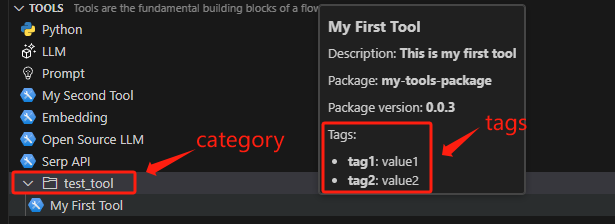
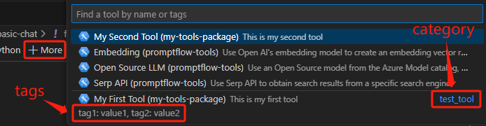
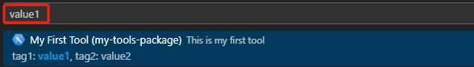

Adding Category and Tags for Tool#
This document is dedicated to guiding you through the process of categorizing and tagging your tools for optimal organization and efficiency. Categories help you organize your tools into specific folders, making it much easier to find what you need. Tags, on the other hand, work like labels that offer more detailed descriptions. They enable you to quickly search and filter tools based on specific characteristics or functions. By using categories and tags, you’ll not only tailor your tool library to your preferences but also save time by effortlessly finding the right tool for any task.
Attribute |
Type |
Required |
Description |
|---|---|---|---|
category |
str |
No |
Organizes tools into folders by common features. |
tags |
dict |
No |
Offers detailed, searchable descriptions of tools through key-value pairs. |
Important Notes:
Tools without an assigned category will be listed in the root folder.
Tools lacking tags will display an empty tags field.
Prerequisites#
Please ensure that your Prompt flow for VS Code is updated to version 1.1.0 or later.
How to add category and tags for a tool#
Run the command below in your tool project directory to automatically generate your tool YAML, use -c or –category to add category, and use –tags to add tags for your tool:
python <path-to-scripts>\tool\generate_package_tool_meta.py -m <tool_module> -o <tool_yaml_path> --category <tool_category> --tags <tool_tags>
Here, we use an existing tool as an example. If you wish to create your own tool, please refer to the create and use tool package guide.
cd D:\proj\github\promptflow\examples\tools\tool-package-quickstart
python D:\proj\github\promptflow\scripts\tool\generate_package_tool_meta.py -m my_tool_package.tools.my_tool_1 -o my_tool_package\yamls\my_tool_1.yaml --category "test_tool" --tags "{'tag1':'value1','tag2':'value2'}"
In the auto-generated tool YAML file, the category and tags are shown as below:
my_tool_package.tools.my_tool_1.my_tool:
function: my_tool
inputs:
connection:
type:
- CustomConnection
input_text:
type:
- string
module: my_tool_package.tools.my_tool_1
name: My First Tool
description: This is my first tool
type: python
# Category and tags are shown as below.
category: test_tool
tags:
tag1: value1
tag2: value2
Tool with category and tags experience in VS Code extension#
Follow the steps to use your tool via the VS Code extension.
Experience in the tool tree
Experience in the tool list
By clickingMorein the visual editor, you can view your tools along with their category and tags:

Furthermore, you have the option to search or filter tools based on tags:
